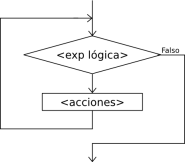

Lazos Mientras

La instrucci?n Mientras ejecuta una secuencia de instrucciones mientras una condici?n sea verdadera.
Mientras <condici?n> Hacer
<instrucciones>
FinMientras
Al ejecutarse esta instrucci?n, la condici?n es evaluada. Si la condici?n resulta verdadera, se ejecuta una vez la secuencia de instrucciones que forman el cuerpo del ciclo. Al finalizar la ejecuci?n del cuerpo del ciclo se vuelve a evaluar la condici?n y, si es verdadera, la ejecuci?n se repite. Estos pasos se repiten mientras la condici?n sea verdadera.
Note que las instrucciones del cuerpo del ciclo pueden no ejecutarse nunca, si al evaluar por primera vez la condici?n resulta ser falsa.
Si la condici?n siempre es verdadera, al ejecutar esta instrucci?n se produce un ciclo infinito. A fin de evitarlo, las instrucciones del cuerpo del ciclo deben contener alguna instrucci?n que modifique la o las variables involucradas en la condici?n, de modo que ?sta sea falsificada en alg?n momento y as? finalice la ejecuci?n del ciclo.
El ejemplo Adivina N?mero le da al usuario 10 intentos para adivinar un n?mero generado aleatoriamente, utilizando esta estructura para verificar si el usuario acierta el n?mero o si se agotan los intentos.